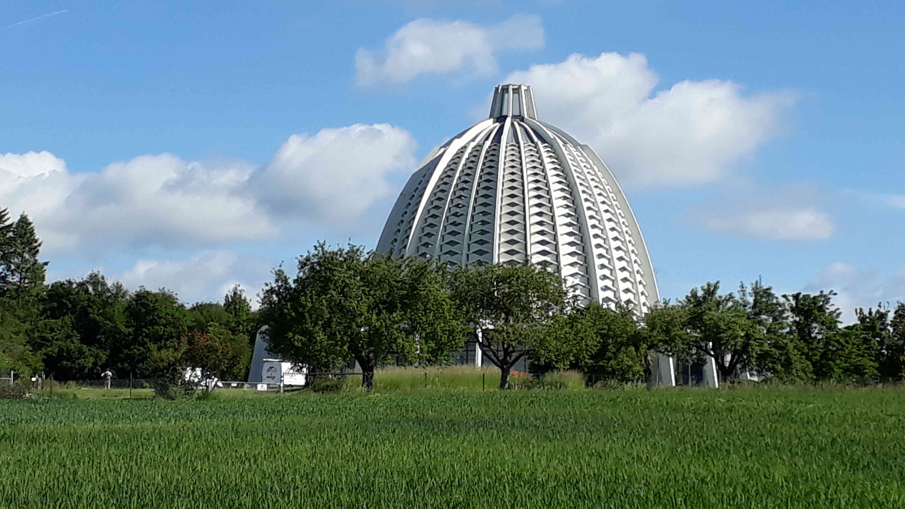

Eine unscheinbare Wiese erhielt die hohe Bestimmung, als «Tempelland» der Schweizer Bahai-Gemeinde zu dienen
Von Bern herkommend, an der Landstrasse Richtung Thun, kurz nach der Gemeinde Rümligen liegt linker Hand im Gebiet der Bodenmatt ein Grundstück, das sich im Besitz der Schweizer Bahai-Gemeinde befindet. Das unscheinbare, landwirtschaftlich genutzte Wiesland ist allerdings ein ganz besonderes Fleckchen Erde: Denn hier – unweit der reformierten Kirche – soll dereinst ein sogenanntes Haus der Andacht entstehen. Doch was ist ein Haus der Andacht?

Das Bahá’i-Tempelland in Kirchenthurnen. (Bild: Ruth Merz)
Offen für alle
Ein Rundbau mit einer Kuppel und neun Eingängen – so werden die
architektonischen Merkmale eines Bahai-Hauses der Andacht beschrieben.
Die architektonische Struktur symbolisiert: Dieses Gotteshaus ist offen
für alle – Menschen aller Völker und Religionen. Die Zahl 9 als höchste
einstellige Ziffer steht im Bahai-Glauben auch für das Umfassende, die
Einheit. Im Haus der Andacht, auch Mashriqu’l-Adhkar (sprich:
Maschrikul-Askar) – zu Deutsch «Aufgangsort des Lobpreises Gottes»
werden ausschliesslich Worte Gottes aus den Heiligen Schriften aller
Weltreligionen gelesen oder gesungen. So beispielsweise Worte von Jesus
Christus, Moses, Buddha, Krischna, Muhammad, dem Bab und Baha’ullah.
Baha’ullah (deutsch: Herrlichkeit Gottes), der Stifter der
Bahai-Religion (1817–1892), sagt: «Selig, wer seine Schritte früh zur
Dämmerstunde zum Mashriqu’l-Adhkar lenkt, mit Gott Zwiesprache hält,
Seiner gedenkt und Seine Vergebung erfleht. Darin eingetreten sitze er
schweigend und lausche den Versen Gottes, des unbedingten Herrschers,
des Allmächtigen, des Allgepriesenen. Sprich, der Mashriqu’l-Adhkar ist
fürwahr jedes Haus, das in Stadt oder Land zu Meinem Gedenken erbaut
wird … Wer die Verse des Barmherzigen melodisch klangvoll singt, dem
wird zuteil, womit sich der Erde und des Himmels Reiche niemals messen
können. Er wird daraus den süssen Duft Meiner Gefilde atmen …»
Beten und Dienen – eine zweifache Bestimmung
Ergänzt wird das Gotteslob durch den praktischen Dienst. Denn neben der
Spiritualität durch das Wort Gottes hat im Bahai-Glauben der tätige
Dienst am Mitmenschen einen herausragenden Stellenwert. So sollen um das
eigentliche Andachtshaus herum nach und nach weitere Gebäude entstehen,
die dem Dienst gewidmet sind. Abdul-Baha, der älteste Sohn Baha’ullahs
und bevollmächtigter Ausleger seiner Schriften (1844–1921), erklärt:
«Der Mashriqu’l-Adhkar ist eine der wichtigsten Institutionen auf der
Welt.» Die ergänzenden Nebeneinrichtungen umfassen (unter anderen) ein
Krankenhaus, eine Apotheke, ein Hospiz für Reisende, eine Schule für
Waisen, ein Altersheim, ein Kindergarten und eine Universität mit
Bibliothek für fortgeschrittene Studien – kurz alles, was eine sozial
tätige Gemeinde benötigt, um allen Menschen zu dienen.
Der Grundgedanke des Mashriqu’l-Adhkars entspricht dem
christlichen «ora et labora» (bete und arbeite) – Spiritualität, gepaart
mit praktischem, wissenschaftlich fundiertem Nutzen im Geist des
Dienstes, den Baha’ullah in den Rang des Gottesdienstes erhob.
Vor der Kulisse der Jungfrau-Region
Der Kauf des Tempellandes im bernischen Kirchenthurnen geht auf eine
Initiative des Ehepaares Walter und Margrit (Gritli) Ott zurück. Gritli
Ott (1921–2010, geboren als Margrit Rellstab) war die Hauptinitiantin
des Unternehmens. Über Margrit Ott ist weiter bekannt, dass sie ihre
Kindheit in Zürich verbrachte. Mit ihrem Ehemann Walter Ott (Lebensdaten
unbekannt) lebte sie in Zürich, Samedan und zuletzt in Wetzikon. Wenn
Leute sie fragten, warum sie so glücklich oder ob sie verliebt sei,
pflegte sie zu antworten: «Ja, ich bin in Baha’ullah verliebt!»
Auf einer Pilgerreise ins Heilige Land (nach Haifa und Akko)
unterbreitete das Ehepaar Shoghi Effendi (1897–1957), dem Hüter des
Bahai-Glaubens, die Idee zum Bau eines nationalen Bahai-Hauses der
Andacht. Shoghi Effendi, Urenkel Baha’ullahs und Enkel Abdul-Bahas,
teilte in der Folge am 9. April 1957 in einem Schreiben an den
Nationalen Geistigen Rat der Bahai der Schweiz mit, dass ein Komitee zur
Findung eines geeigneten Grundstückes gebildet werden solle, dem dann
auch Margrit Ott angehörte. Das Land sollte zirka 10 bis 15 Kilometer
von der Stadt Bern entfernt liegen. Die Haupterfordernis für dieses Land
war jedoch: «Es muss auf einem Hügel liegen, von wo aus man einen
ausgezeichneten Blick auf die Jungfrau hat.» Die Jungfrau in ihrer
grandiosen Majestät war nämlich Shoghi Effendis Lieblingsberg, den er in
jungen Jahren selbst mehrfach bestiegen hatte. Der Hüter teilte weiter
mit, dass es für den Moment genüge, ein Grundstück von zirka 1000 bis
2000 Quadratmetern zu erwerben, das später ergänzt werden könne.

«The Indomitable Enthusiast» Shoghi Effendi auf der Spitze der Jungfrau. (Fotograf unbekannt, aus: The Guardian of the Baha’i Faith by Ruhiyyih Rabbani)
Auch wenn aus heutiger Sicht der Bau eines Bahai-Hauses der Andacht (auch Tempel genannt) mitten in der Landwirtschaftszone als eher unrealistisch erscheinen mag, so hat doch dieses Fleckchen Erde für die Gläubigen der jüngsten Weltreligion grosse symbolische Bedeutung. Häuser der Andacht wurden auf die Initiative Abdul-Bahas und Shoghi Effendis nach und nach in allen Kontinenten der Welt errichtet. Das «Europäische Bahai-Haus der Andacht» befindet sich im deutschen Hofheim-Langenhain bei Frankfurt am Main. Nationale und örtliche Häuser der Andacht folgten später unter der Führung des Universalen Hauses der Gerechtigkeit, der höchsten Bahai-Institution mit Sitz in Haifa, Israel. Wie vielfältig die Architektur solcher Andachtshäuser trotz gemeinsamer Grundstruktur sein kann, beweisen unter anderem diejenigen in New Delhi (Indien) oder Santiago de Chile.
Das Bahá’i-Haus der Andacht in Langenhain. (Archiv: Ruth Merz)
Was glauben die Bahai?
«Bahai sein bedeutet die ganze Welt zu lieben, die Menschheit zu lieben und zu versuchen, ihr zu dienen, für den universellen Frieden und für die Menschenfamilie zu arbeiten.» So fasste Abdul-Baha einmal seinen Glauben in kurze Worte. Gemäss den Lehren Baha’ullahs ist die Menschheit ins Zeitalter ihrer Reife eingetreten. Dies macht den Aufbau einer friedlichen Weltgesellschaft möglich. «Die Erde ist nur ein Land, und alle Menschen sind seine Bürger», sagt der jüngste Religionsstifter, von den Bahai meistens Gottesoffenbarer oder Manifestationen Gottes genannt. Bahai anerkennen alle Religionen als Strahlen ein- und derselben Sonne. Selbstständige Suche nach Wahrheit, Überwindung von Vorurteilen, Ausgleich zwischen extremer Armut und extremem Reichtum, Bildung und Erziehung für alle, Gleichwertigkeit von Mann und Frau, aber auch von Religion und Wissenschaft sind weitere Prinzipien eines Glaubens, der keinen Klerus benötigt. Allerdings ist es den Gläubigen auferlegt, täglich die Heiligen Schriften zu studieren. Wenn die Menschheit nur der Wissenschaft vertraue, ende sie im Sumpf des Materialismus; hänge sie aber ausschliesslich an der Religion, so versinke sie im Morast des Aberglaubens, betont Baha’ullah.
Weltweite Zivilisation des Friedens und der Gerechtigkeit
Der schiitische Klerus sah in den Lehren Baha’ullahs eine Gefahr (die schiitische Theologie insbesondere im Iran verfolgt bis heute Religionen, die nach Muhammad entstanden). So wurde Baha’ullah aus seiner persischen Heimat Teheran verbannt – zunächst nach Baghdad, wo er 10 Jahre lang wirkte, und dann immer weiter über Konstantinopel (Istanbul), Adrianopel (Edirne) nach Akko, der Gefängnisstadt des osmanischen Reiches (heute Israel). War Baha’ullah bis an sein Lebensende ein Gefangener, so wurde Abdul-Baha, der die Verbannung und Verfolgung seines Vaters viele Jahrzehnte lang teilte, im Zuge der jungtürkischen Revolution befreit. Er reiste 1911–1913 in den Westen, um die Lehren seines Vaters zu verbreiten. Er besuchte unter anderem Europa und Amerika, und hatte auch einen kurzen Aufenthalt in der Schweiz. Für die Bahai ist er das vollkommene Vorbild, indem er alle Tugenden verkörpert, die eine Seele in dieser Welt zur Vorbereitung auf das geistige Leben nach dem Tode erlangen kann. Testamentarisch bestimmte Abdul-Baha seinen Enkel Shoghi Effendi zum Hüter des weltweit im Wachstum begriffenen Bahai-Glaubens. Shoghi Effendis grösstes Verdienst war die sukzessive Einführung der administrativen Gemeindeordnung, bestehend aus gewählten Gremien auf lokaler und nationaler Ebene, die schliesslich zur Wahl des Universalen Hauses der Gerechtigkeit führte. Eine Ordnung, die von Baha’ullah mit Blick auf eine künftige Weltzivilisation des Friedens, der Einheit und Gerechtigkeit offenbart und prophezeit wurde.
Ruth Merz ist Bahai, pensionierte Journalistin / Redaktorin, HR-Fachfrau / RAV-Beraterin.
Weitere Artikel von {{ author.author }} finden Sie hier:
Zur Vertiefung:
- Texte von Baha’u’llah, `Abdu’l-Baha, Shoghi Effendi und dem Universalen Haus der Gerechtigkeit: Das Bahai-Haus der Andacht. Bedeutung und Bestimmung, Hofheim-Langenhain: Bahai-Verlag 1988.
- Bahá’u’lláh: Kitab-i-Aqdas. Das heiligste Buch, 1891, Hofheim-Langenhain: Bahai-Verlag 2000.
- Abdu’l-Bahá: Ansprachen in Paris, Hofheim-Langenhain: Bahai-Verlag 1983.
- Shoghi Effendi: Die Weltordnung Baha’u’llahs, Bahá’í Verlag GmbH, Hofheim-Langenhain 1977
- Webseite Baha’i Schweiz, verfügbar unter: bahai.ch (04.03.2022)